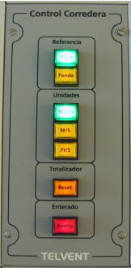

El módulo de Control de Corredera incluye los elementos necesarios para controlar el módulo de Corredera del Panel de Indicadores, el cual simula una Corredera Doppler dotada de sensores transversales a proa y popa del buque así como de sensor de velocidad longitudinal, con posibilidad de indicar la velocidad con respecto al agua o al fondo y en diversas unidades de medida.

Contiene los siguientes elementos:
- Pulsador e Indicador de selección de Referencia Agua: cuando se pulsa, la velocidad se muestra con respecto al agua (modo longitudinal). El pulsador permanece encendido hasta que se cambie el modo de presentación.
- Pulsador e Indicador de selección de Referencia Fondo: cuando se pulsa, la velocidad se muestra con respecto al fondo (modo doppler). El pulsador permanece encendido hasta que se cambie el modo de presentación.
El pulsador de selección de referencia al fondo sólo funciona cuando el buque controlado se encuentra en aguas poco profundas. La profundidad máxima para que el sistema considere que las aguas son poco profundas es configurable y se define en el fichero del configuración del sistema.
Los dos pulsadores anteriores (Agua y Fondo) son excluyentes entre sí.
- Pulsador e Indicador de presentación de la Velocidad en Nudos: cuando se pulsa, la velocidad se muestra en nudos. El pulsador permanece encendido hasta que se cambie la unidad de presentación de la velocidad.
- Pulsador e Indicador de presentación de la Velocidad en M/S: cuando se pulsa, la velocidad se muestra en metros por segundo. El pulsador permanece encendido hasta que se cambie la unidad de presentación de la velocidad.
- Pulsador e Indicador de presentación de la Velocidad en Ft/S: cuando se pulsa, la velocidad se muestra en pies por segundo. El pulsador permanece encendido hasta que se cambie la unidad de presentación de la velocidad.
Los tres pulsadores anteriores (Nudos, M/S y Ft/S ) son excluyentes entre sí.
- Pulsador de Reset de Totalizador de corredera: cuando se pulsa, se realiza la puesta a cero del totalizador de la corredera longitudinal o doppler, en función del modo seleccionado.
- Indicador de Avería y Pulsador de Aceptación: cuando el instructor introduce una avería en la corredera, este indicador se enciende de forma intermitente. Cuando el operador lo presiona (reconociendo la avería), el indicador se ilumina de forma fija, y finalmente se apaga cuando el instructor elimina la condición de avería.
Si la unidad controlada no dispone de corredera, este panel estará completamente apagado.